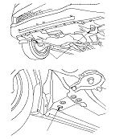
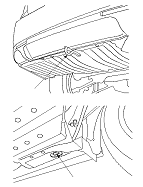

Towing
|
If the vehicle needs to be towed, call a professional towing service. Never tow the vehicle behind another vehicle with just a rope or chain. It is very dangerous.
Emergency Towing
There are three popular methods of towing a vehicle.
Flat-bed Equipment −
The operator loads the vehicle on the back of a truck.
This is the best way of transporting the vehicle.
To accommodate flat-bed equipment, the vehicle is equipped with front towing hooks (A), front tie down hook slots (B), rear towing hook (C), and rear tie down hook slots (D).
The towing hooks can be used with a winch to pull the vehicle onto the truck, and the tie down hook slots can be used to secure the vehicle to the truck.
Wheel Lift Equipment −
The tow truck uses two pivoting arms that go under the tyres (front or rear) and lift them off the ground. The other two wheels remain on the ground.
This is an acceptable way of towing the vehicle.
Sling-type Equipment −
The tow truck uses metal cables with hooks on the ends. These hooks go around parts of the frame or suspension, and the cables lift that end of the vehicle off the ground. The vehicle's suspension and body can be seriously damaged if this method of towing is attempted.
This method of towing the vehicle is unacceptable.
If the vehicle cannot be transported by a flat-bed, it should be towed with the front wheels off the ground. If the vehicle is damaged, and must be towed with the front wheels on the ground, or with all four wheels on the ground, do this:
Manual Transmission
Automatic Transmission
It is best to tow the vehicle no farther than 80 km (50 miles), and keep the vehicle speed below 55 km/h (35 mph).

|
Front:

Rear:
 |